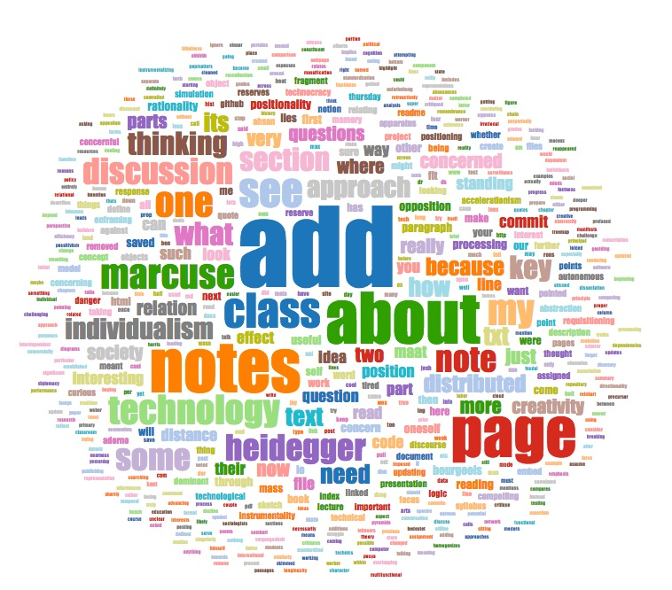

VCSs archive the current and previous versions of a project in a type of directory called the repository, and facilitate the bidirectional transmission of repository contents between the project directory on computers used by collaborators, referred to as the local repository, and the master copy of the project, referred to as the remote repository. VCSs also document the actions conducted by project members on the contents of the repository, such as making a change to a line of code in one of the files. This means that a repository contains data about the activity and dynamics of its own social network. (Bird et al. 2; Crowston et al 7:2)
The two models of version control in use are centralized version control (CVC) and distributed version control (DVC). As this paper is concerned only with the usage of DVC for research-creation, please see Version Control Systems as Tools for Research-Creation: Using git to Write a Paper about Using git (Palumbo 2017) for a more in-depth discussion on the differences between CVC and DVC.
The most prominent DVC service is Github.com, which hosts millions of publicly available repositories in the cloud, and operates as a social network comprising programmers, educators, students, and designers. From the outset of this course, the author maintained all notes and assignments pertaining to class topics, readings, and discussions in a public repository hosted on Github.com, called "spth6155." To access this repository follow this link. This was motivated by a desire to continue investigating the ideas expressed in the aforementioned paper on VCS and research-creation, (ibid) through the theories discussed in the class, as well as to have a contemporaneous accounting of how the author's ideas developed, as can be witnessed in the exported commit history from this repository:
Drawing from the works discussed in the Accelerating Technicity course, with a particular focus on Heidegger, Simondon, and Marcuse, this paper looks at collaborative project development using distributed version control systems (DVCS) through an accelerationist lens. Heidegger's concept of the concernful approach in temporal and spatial domains is leveraged to discuss an individual's experience when interacting with networked data in a computer-supported collaborative work (CSCW) situation. Following this discussion, Simondon's concept of genesis of the technical object as its essence (Simondon 11) is implemented to develop a schema of the propagation and reification of ideas throughout a DVCS such as Github.com. The paper concludes with a series of analyses on the data contained within the spth6155 repository while reflecting on Marcuse's concept of technical self-administration.
VCSs are employed in response to the needs of collaborative research, creation, and production -- a reality of a networked technical society. Beyond materiality, technology is a way of thinking, termed Gestell (61) -- which is translated as 'positionality' by Bremen Lectures translator Andrew Mitchell -- Heidegger concentrated on the ways in which technology affects how humans think. It is through positionality that humans come to view things as useful. Things that are useful become conceived of as "standing reserve," (23) meaning that they are a resource awaiting being put to use. Through positionality, however, humans too stand in reserve until they are ordered into a situation where their being is engaged towards a purpose. (26) As a large-scale ordering of human and nonhuman standing reserve, society is itself a technology and thus also a standing reserve.
Through the ordering of things as standing reserve, things are positioned in relation to oneself, and in relation to other things that are all themselves positioned in relation to oneself. In this schema, things concernfully approach those that are thinking about them. (23) With the concernful approach, the concerning creates in the mind of a human a mental model of a thing's position in space and time in relation to the human thinker:
[In the]...chain of requisitioning...the standing reserve persists. It persists insofar as it is imposed upon for a requisitioning. Directed into requisitioning, it is placed into application. Application positions everything in advance in such a manner that what is positioned follows upon a result. (Heidegger 25)
It is important to emphasize in this quote that it is through application that a thing becomes standing reserve. It is first conceived of as a resource, then made to be that resource. A thing's becoming unfolds from its beginning as a different standing reserve through the processes that see it reach its application that requisistioned it from another standing reserve in the first place. Heidegger called this process "...to position, place, set" (26) It would therefore follow that through the processes of requisition, conscription, and application, the open-source social situation is too a technology.
Application, according to Heidegger, presupposes a thing's positioning. (ibid) However, in cases where one cannot predetermine how a thing's observer will enframe it -- or in the Github social network, where one cannot predetermine how a repository's potential future viewer will enframe it -- its application cannot itself always be accurately predicted.
Making use of a DVC affords collaborators that are separated by any geographical distance the ability to collaborate on the same project within reasonable timelines. The mind(s) and potentialities of one's collaborator(s) concernfully approach in this paradigm of distributed creativity. When collaborators discuss a particular issue in the project, they do not physically become nearer, but their words presence each other, causing a reduction in the relative longinquity (Heidegger 23) between each participating collaborator.
Through the act of accessing any document on a remote repository, and requesting documents that were previously worked on by any other member of the group, the work is requisitioned and concernfully approaches nearer. Opening a shared document requisitions its idle, representative data as standing reserve from its home in the remote server. This data travels from the server to the user's computer, and is made available as the most-recent version of the shared document. The sequence of acquiring and opening a shared document involves the movement of data in space and time. Whether a user conceptualizes the bi-directional dataflow trajectories between client and server as one of both space and time is another matter, for as the data takes time to travel from the server to the browser, the physical relationship between the user and their computer does not change. Whatever changes in the on-screen activity that results from the point in time when a user clicks to open a shared document, to the successful loading of said document, could be said to be experienced by a user as a temporally-dominant concernful approach.
Heidegger's example of the carpenter producing a table depicts a thing concernfully approaching in time. (25) That is, while it does approach in distance, the observer experiences it mostly as a matter of it being fabricated over time: from standing reserve -- raw materials, such as treated lumber, sitting idle in the carpenter's workshop; to requisitioning, such as its characteristic positioning as a table, and conscription of the raw materials into position; to its application as a table. A human living in the age of the internet also experiences the concernful approach of many things primarily in time over distance, as can be demonstrated in the difference between making a table and ordering one from a retailer online. With the latter, although one is aware that it must have to travel several distances, including from a vehicle to your front door, it concernfully approaches in the time it takes to arrive. The concernful approach of networked data, when abstracted into on-screen representations is primarily -- if not totally -- witnessed in the temporal domain, as it is normalized through many common instances of internet usage, such as page loading, or downloading or uploading content.
For distributed version control, a creator experiences the concernful approach through the overall life cycle of the work, but also at the lower level of individual interactions with the VCS. Github.com is built upon the DVC known as git, which operates on a computer's command line interface (CLI). As git manages versioning of project files, the most common low-level interactions between a creator and git comprise commands that order the transmission of newer versions of project files between the remote and local repository. An action where a creator requests the most-recent version of the project from the remote repository is called a pull. In this action, the newer project version concernfully approaches the user, who experiences its movement in the temporal domain as waiting. Similarly, when a user wishes to send their recent changes to the remote -- an operation called a push -- the terminal provides metric feedback about the progress of the operation in terms of percentage, but not in the spatial domain, as there is no detail provided relating to the physical distance(s) travelled by the data. Time is in these situations a technological embodiment. The user waits for the newer versions to be transferred in space.
Through the efforts to contemporaneously document the ontogenesis of the ideas in this paper and the author's reflections whilst interacting with course material and discussions, one can need only look at the commit history to find a point-by-point accounting of this very paper's concernful approach in time.
commit 97c2ef9e104dbb7bb264a1c9acf96d4507e2c929
Author: michaelpalumbo
Date: Thu May 11 14:28:31 2017 -0400in 'notes-from-may-11.txt' definitely see the latter part of the document for the discussion on simulation. simulation might be REALLY interesting in thinking about how creativity manifests and is changed by work in/with a computer/distributed-computing/cloud social network/etc: we challenge for[th] the representaions (sic) on screen for reordering to serve our purposes and so on.
As the master record of a contemporaneous accounting of the development of a work, performed by one or many collaborators, the remote repository persists in the cloud. It maintains its longinquity (Heidegger 23) in relation to the local repository(s) and the humans that clone, push, and pull its contents.
The concept of position, place, set can be used to schematize a distributed version control workflow. Heidegger uses the example of a peasant positioning an ox, not simply so that it is positioned in space, but that it is positioned in space for a specific purpose and use in an action. (26) This logic can also be observed in the case of DVC. When cloning a repository, a user conscripts the remote repository from standing reserve, applying it as a starting position for their own work going forward. Conversely, the act of pushing a change(s) to a remote repository, in the cloud, is an act of positioning the new state of the repository as a standing reserve. In the cloud, the repository as standing reserve will persist -- barring any actions by the user or Github management that would see the repository removed, either willful removal, breach of service contract, or closing of the account.
As Github.com is a social network, any user may read the contents of another user's public respositories. Should they wish to copy a repository to their local machine -- an action called cloning -- they may do so freely, and without the permission of the account holder(s). In addition to hosting public repositories for free, users may opt-in to a paid service, offered by the company, that allots a certain number of private repositories, depending on their chosen subscription. Private repositories operate very similarly to their public counterparts in that they do version tracking in the commit history, have bug tracking, and afford approved collaborators to interact with any version of the source code. Where public and private repositories differ, is that private repositories are not exposed to the social network, which means that their contents are neither viewable, nor able to be searched for. Github does not mandate that its users expose their work and thoughts to the commons via public repositories, but the fact that privacy is the single greatest difference between free and paid accounts suggests that the social order of Github is one which places emphasis on having users engage in open and transparent participation within its social network.
In his book Du mode d'existence des objets techniques, Gilbert Simondon posits that the essence of technical objects is their genesis, or how they come into being. (12) "The technical object is a unit of becoming," (Simondon 12) and that
there is a sequence, a continuity, which extends from the first engines to those which we know and to those still in evolution. As a consequence, just as in the case of phylogenetic sequences, any particular stage of evolution contains within itself dynamic structures and systems which are at the basis of any evolution of forms. The technical being evolves by convergence and by adaption to itself; it is unified from within according to a principle of internal resonance. (14)The contents of a repository, through circuits of ordering, are enframed for different applications. These circuits may be plotted as the genesis of the technical object. Simondon asserts that no technical object can be defined by its usage. (11) For Heidegger
one positioning challenges another, falls upon it with a conscripting. This does not proceed by a mere sequence of acts of positioning. According to its essence, conscription occurrs in secret and in advance. Only for this reason does conscription make possible the planning and taking of action upon the individual motives of the particular positionings in a useful manner. But now where does this chain of requisitioning finally run off to? (Heidegger 27)The act of cloning a repository is an acquisition of another person's progress towards expressing an idea, including the contemporaneous accounting of the author's sentiments about the work, process, failures, surprises, and possible future directions. In the open-source situation, a Github user is not required to fulfill the desires of the originating author, for they are free to choose to modify the contents of the cloned repository such that it becomes standing reserve for an entirely new application. Thus, the process of using someone else's repository is an act of enframing it.
Inherent within a discussion of the practice of uploading the source code and history of a project to the cloud for anyone to view and adopt for their own personal use and innovation there is a binary of individual selflessness and individual self-interest, wherein original authors offer their work up for free for others members of Github to come along and annonymously benefit from the hard work of others, without any condition of reciprocity. While it may be tempting at first to enframe such a participation as selfless, or perhaps altruistic, contributors do, however, stand to receive much in return, including "...psychological benefits such as the satisfaction of helping or living up to a moral commitment ... [or] boosting one's ego, enjoyment, and community identification." (Wu et al 254) It is also common that those who clone or fork a repository will provide feedback and constructive criticism of the work, which, in the github social network, takes place in the issues section.
According to Marcuse,
the principle of individualism, the pursuit of self-interest, was conditioned upon the proposition that self-interest was rational, that is to say, that it resulted from and was constantly guided and controlled by autonomous thinking. The rational self-interest did not coincide with the individual's immediate self-interest, for the latter depended upon the standards and requirements of the prevailing social order, placed there not by his autonomous thought and conscience but by external authorities. (Marcuse 140)The act of exposing one's work to peer review, modification, and reification, can be summarized by "...share early [and] often," (Priem 2013) an oft-touted motto of open-source software development communities which encourages creators to push their work into theirs and other milieus. As a work ethic, though predicated on interdependence, it is also motivated by self-interests. Self-interest is a driving force inherent to the participation within an open-access social network of ideas and work.
There exist cases where art projects have been open-sourced, as in the case of CLOUDS, (George and Minard 2015) a documentary about creative coding. Built using a game engine, it is defined by its creators as an interactive film that enables viewers to manipulate data vizualisations to suit their interests and aid in learning. The source code for the project has also been released in a github repository. Among the motivations behind releasing CLOUDS in an open source repository on Github, was the desire to share the work that went into making the project -- which could be interpreted by Simondon as the project's genesis -- and to discover how the project, its repository, and the individual technical objects within the repository would be enframed by those who clone or fork it in the future. (George and Minard 2017)
For Marcuse, humanity's "essential freedom" (Marcuse 152) was predicated on the permission that any individual be able to reach beyond that which is expected of them -- whether this be beyond their skillset, beyond their training, or beyond their social fulfillments. In Some Social Implications of Modern Technology, Marcuse elaborated this in the context of several orders of indvidualism.
Where the daily social performance of the individual has become antagonistic to his 'true interest', the individualist principle has changed its meaning. The protagonists of individualism were aware of the fact that 'individuals can be developed only by being trusted with somewhat more than they can, at the moment, do well'; today, the individual is trusted with precisely what [they] can, at the moment, do well." (Marcuse 152)However, learning is an essential process inherent to a any creative undertaking. Just as cloning a repository may be in service of solving a portion of a project, developers seek out solutions to their design challenges by asking for help on question and answer communities, the most prominent case being StackOverflow. (Vasilescu et al 2013) The site received over 48 million unique visitors and over 600 million views globally in the month of June, 2017, according to this analysis. (Quantcast.com) This level of engagement and participation in a community of crowdsourced knowledge by those working on development projects problematizes Marcuse's technocratic procession of individual development between those who are tasked with more than what they are capable of moving towards those who are tasked with only what they are capable of.
In Marcuse's critique of the technocratic society is this introduction of the shaping of a person into a personality with traits and skills suitable for the completion of certain pre-arranged tasks, (151) thereby positioning an individual as standing reserve. This discussion around the intent towards a refinement of a personality or thing as the requisitioning and development of traits and skills can be traced through to the accelerationists, in Reed, with the tenet of abstractify
As Mateo Pasquinneli has shown, this power of abstraction is an inherent capacity of the organism (including the human brain) to invent new norms in relation to dynamic surroundings, recalling that a norm is not law, but a conception of law. (Reed 535-536)Any time a collaborator commits a change to a project, they must also provide a comment about this change. This is a formal constraint written into the software: git will reject any attempts to make a commit without providing an accompanying comment. The only exception to this is if the user adds the --allow-empty-message to their commit command, which overrides git's control over this matter. That the act of committing a change to a project must carry with it a comment by the agent pertaining to the change is an example of the apparatus of git ordering the behaviour of a contributor. While there may be incentives within a group to encourage the development or adoption of best practices for commit messages, git does not require anything in particular to this end, other than to require that something be entered as a commit message. For Marcuse, a technological rationality "establishes standards of judgement and fosters attitutdes which make [humans] ready to accept and even to introcept the dictates of the apparatus." (Marcuse 141)
An emerging field of study that is concerned with version control is software repository mining (MSR). In MSR, researchers conduct qualitative and/or quantitative analyses on repositories, or sets of repositories. Mining a repository affords researchers many insights, including how it is structured, how this structure developed over time, and patterns of behaviour in team interactions. Vasilescu, Serebrenik, and Filkov mined sets of data from 23,493 repositories on Github.com in order to present insights about the social diversity of Open Source Software teams. (Vasilescu et al. 2015)
In another MSR study, Crowston and Howison (2005) showed that as open source software projects grew in terms of both the size of the constitutent technical objects as well as the number of active human contributors, the structure of their social networks became increasingly decentralized. (Crowston and Howison 1) The researchers also demonstrated a corelation between this factor and an increasing tendancy for the sub-systems of technical objects to fracture into technical objects unto themselves, (ibid) which is also consistent with Reed's concept of abstractify.
Repository mining can also be seen as an enframing of the mined repository. Take this very paper and its repository as an example: the author performed several MSR analyses on the contents of the repository, including both its technical objects and the commit history. The first analysis involved the preparation of a spreadsheet listing several hundred of the most-used words in one column, followed by the listing of the number of instances that each word appeared in a second column.
This data was further processed using a MSR tool called Code History Miner, (Code Mine Ltd. 2016) by arranging the words into a word cloud visualization, which represents the most commonly used words in fonts larger than those used less commonly.

The "Time Between Commits Histogram", which represents the frequency at which commits were made within a given amount of time, shows that the highest amount of commits within a 24-hour period tended to occur within spans of thirty minutes or less. The second-most common number of commits ocurr between 30 minutes and 2 hours. This suggests that the author's work process tends toward segmenting the progress of a work into short sprints as opposed to working for several hours or days before committing a change to the repository.
Another way to enframe the SPTH6155 repository is to analyze its commit history to understand its ontogenesis. To this end, a tool called gource (Caudwell 2010) was used to generate a visualisation as a movie:
This paper presented a partial technicity of distributed version control through accelerationist lenses of Heidegger's positionality, Simondon's essence of technical objects, and a dialectic on Marcuse's technological rationality. Heidegger's flow of the becoming of material objects was enframed to examine the peer-to-peer interactions in a DVC system and its expanded social network. In the way that positionality links everything as standing reserve, self-interest is enframed as an ordering of human, technical object, and human-technical object. Individual self-interest in a social network of software developers does not hinder accelerationism. Rather, self-interest relies on, contributes to, and calibrates the efforts and effects of accelerationism.